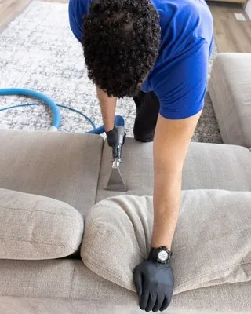

استلمت مفتاح بيتك الجديد في الرياض، والنقل بعد كم يوم، وقدامك بيت فاضي فيه غبار وريحة مكان مقفول. أول سؤال يجي في بالك: من وين أبدأ؟ وهنا يفرق تنظيف المنزل قبل السكن بالرياض لما يكون له ترتيب واضح، لأنك توصل لكل مكان في البيت الفاضي، بدون كنب تشيله ولا كراتين تتعثر فيها.
محتويات المقال 32 قسم
- تنظيف المنزل قبل السكن بالرياض: ليش قبل دخول الأثاث بالذات؟
- التحضير قبل أي تنظيف
- ترتيب مهام تنظيف البيت قبل الانتقال بالرياض: الصورة الكاملة قبل التفاصيل
- الخطوة الأولى: الأسقف والأماكن العالية
- الخطوة الثانية: النوافذ والزجاج والستائر والأبواب
- الخطوة الثالثة: الخزائن والأدراج وأرفف المطبخ من الداخل
- الخطوة الرابعة: المطبخ
- الخطوة الخامسة: دورات المياه
- الخطوة السادسة: الأرضيات آخر شي
- ليش هذا الترتيب بالذات؟
- تنظيف البيت قبل دخول الأثاث بالرياض: مهام لازم تخلص قبل التنظيف
- مهام تأجلها لما يدخل الأثاث
- جدول زمني مقترح ليوم أو يومين قبل الانتقال
- متى توفر الاستعانة بفريق متخصص وقتك وجهدك؟
- إذا كان البيت مسكون قبلك
- إذا كان البيت ما انسكن من فترة
- الشقة والدور والفيلا: وش يختلف في الترتيب؟
- استلام البيت: وش تصور وتوثق
- شنطة أول ليلة
- غبار الرياض بين التنظيف ويوم النقل
- يوم دخول الأثاث: كيف تحافظ على التنظيف
- تقسيم الشغل بين أهل البيت
- لو عندك أطفال صغار
- ريحة البيت قبل ما تسكن
- أول أسبوع بعد السكن
- مواد تناسب كل سطح في البيت
- لو البيت فيه حوش أو سطح
- جولة مراجعة أخيرة قبل ما تسكر الباب
- لو بتسلم بيتك القديم في نفس الأسبوع
- أخطاء شائعة قبل الانتقال
- أسئلة شائعة عن تنظيف البيت قبل السكن
- الخاتمة
المشكلة إن كثير يبدأ بالأرضيات لأنها أول شي يشوفه، وبعد ما يخلصها ينفض الغبار من المراوح والنوافذ، فيرجع كل شي ينزل على الأرض اللي نظفها. وفي هالدليل نمشي معك خطوة خطوة في تنظيف المنزل قبل السكن بالرياض، ونقولك وش تسوي أول، ووش تأجله، وليش. والهدف إن تنظيف البيت قبل دخول الأثاث بالرياض يخلص مرة وحدة بدون ما تعيد نفس المكان مرتين.
💡 الدليل هذا للبيوت والشقق الجاهزة، سواء كانت مسكونة قبلك أو فاضية من فترة. أما البيت الطالع من التشطيب، ففيه مخلفات بناء وله تنظيف مختلف بخطوات خاصة فيه.
تنظيف المنزل قبل السكن بالرياض: ليش قبل دخول الأثاث بالذات؟
لما يكون البيت فاضي، توصل لكل زاوية بدون عوائق. الخزائن من الداخل فاضية، والأرضية مكشوفة كلها، وتقدر تفتح النوافذ وتشتغل براحتك. ولو أجلت التنظيف لما تنقل، بتلقى نفسك تنظف حول الأغراض، وتحط الصحون في خزانة ما انمسحت، وتفرش السجاد على أرضية فيها غبار المستأجر اللي قبلك.
وفيه سبب ثاني: التعب. يوم النقل نفسه متعب، والأيام اللي بعده تروح في الترتيب وفتح الكراتين. فلو ما خلصت تنظيف البيت قبل دخول الأثاث بالرياض قبلها، غالبًا بيتأجل أسابيع، وبتسكن في بيت نص نظيف. وعشان كذا ترتيب مهام تنظيف البيت قبل الانتقال بالرياض يبدأ قبل موعد النقل بيومين أو ثلاثة على الأقل.
والترتيب الغلط يضيع المواد كمان، مع الوقت. تمسح الرخام وبعدين تنظف الشبابيك فيقطر عليه الماء، أو تعقم الحمام وبعدين تكنس الممر فيدخل الغبار. ولما يكون عندك تسلسل ثابت، كل خطوة تمهد للي بعدها بدل ما تخرب اللي قبلها.
التحضير قبل أي تنظيف
قبل ما تمسك فوطة أو تفتح منظف، خذ ساعة تمشي فيها في البيت وتجهز. هالساعة توفر عليك نص يوم بعدين، لأنك تعرف وش قدامك وتجيب اللي تحتاجه من أول مرة. وأغلب الأخطاء في تنظيف المنزل قبل السكن بالرياض تجي من البداية بدون تحضير.
معاينة البيت
- امش في كل غرفة وافتح كل باب وخزانة ودرج
- شوف وين الغبار أكثر، ووين فيه بقع أو ترسبات أو دهون
- لاحظ أي ريحة غريبة في الحمامات أو المطبخ أو المصارف
- اكتب ملاحظاتك غرفة غرفة في جوالك
تصوير الحالة
صور كل غرفة قبل ما تبدأ، خصوصًا لو البيت إيجار. الجدران، والأرضيات، والخزائن من الداخل، والحمامات، وأي كسر أو بقعة أو خلل. هالصور تحميك وقت تسليم البيت في المستقبل، وتوثق الحالة اللي استلمته عليها.
الماء والكهرباء
- تأكد إن عداد الكهرباء شغال، وجرب الأفياش والإنارة في كل غرفة
- افتح الحنفيات وخل الماء يجري شوي لو البيت مقفول من فترة
- جرب السخانات، لأنك بتحتاج ماء دافي للدهون والترسبات
- تأكد إن الشفاطات في المطبخ والحمامات تشتغل
الأدوات والمواد
- مكنسة كهربائية فيها رؤوس للزوايا والفتحات
- ممسحة ودلوين: واحد للمنظف وواحد للشطف
- فوط مايكروفايبر بألوان مختلفة للمطبخ والحمامات والغرف
- منظف متعدد الاستخدام، ومزيل دهون، ومنظف حمامات، ومنظف زجاج
- فرشاة صغيرة للفواصل، وممسحة زجاج بمطاط
- سلم آمن، وقفازات، وكمامة للغبار، وأكياس كبيرة
التهوية
افتح النوافذ والأبواب الداخلية أول ما توصل، وشغل الشفاطات. البيت المقفول يكون هواه ثقيل، والمنظفات تحتاج تهوية. وفي الرياض، الأفضل تفتح النوافذ الصباح بدري قبل ما يشتد الحر والغبار، وتسكرها لما يبدأ الهوا يجيب تراب. ولا تخلط مواد التنظيف مع بعض، خصوصًا الكلور مع أي منظف ثاني. ومع التحضير هذا، يصير ترتيب مهام تنظيف البيت قبل الانتقال بالرياض واضح من أول دقيقة.
ترتيب مهام تنظيف البيت قبل الانتقال بالرياض: الصورة الكاملة قبل التفاصيل
قبل ما ندخل في كل خطوة، هذا الترتيب كامل في سطور. اطبعه أو صوره، وارجع له كل ما خلصت مرحلة. وفكرة ترتيب مهام تنظيف البيت قبل الانتقال بالرياض بسيطة: تبدأ باللي ينزل منه غبار، وتنتهي باللي ينزل عليه الغبار.
- الأسقف والأماكن العالية: الغبار والعناكب والمراوح والتكييف والإضاءة
- النوافذ والزجاج والستائر والأبواب
- الخزائن والأدراج وأرفف المطبخ من الداخل
- المطبخ: الأجهزة المدمجة والحوض والأسطح
- دورات المياه: التعقيم والفواصل والمصارف
- الأرضيات آخر شي
ولو البيت فيه أكثر من دور، طبق الترتيب على الدور العلوي كامل قبل الأرضي. وخل الدرج آخر شي في الدور العلوي، وانزل وأنت تنظفه. وبهالشكل يمشي تنظيف المنزل قبل السكن بالرياض من فوق لتحت في البيت كله، وفي كل غرفة لحالها.
الخطوة الأولى: الأسقف والأماكن العالية
كل غبار فوق راسك بينزل في يوم من الأيام. فلو بدأت فيه، تضمن إنه ينزل على أرضية ما نظفتها للحين. وفي تنظيف البيت قبل دخول الأثاث بالرياض، هالخطوة أسهل بكثير لأن ما فيه أثاث تحته تحتاج تغطيه.
- زوايا الأسقف وشباك العنكبوت بعصا طويلة أو فرشاة بيد ممتدة
- المراوح: كل ريشة من فوق وتحت، وحط تحتها كيس أو جريدة
- فتحات التكييف وشبكاتها: اشفطها وامسحها، ونظف الفلاتر لو تقدر تفكها
- الثريات واللمبات وأغطيتها، والكهرباء مفصولة
- أعلى قوائم الأبواب وأعلى الخزائن المثبتة
- حساسات الدخان أو السماعات المثبتة في السقف لو موجودة
استخدم فوطة ناشفة أو شبه ناشفة هنا. الموية الكثيرة على الأسقف والمراوح تعمل خطوط وتنزل نقاط على الجدران. ولو لقيت بقع رطوبة في السقف، صورها وبلغ المالك أو المختص قبل ما تكمل، لأنها ممكن تكون من تسريب.
الخطوة الثانية: النوافذ والزجاج والستائر والأبواب
بعد ما نزل غبار الأسقف، دور النوافذ. وهي من أكثر الأماكن اللي يتجمع فيها غبار الرياض، خصوصًا المجاري والإطارات. ولو البيت كان مقفول، بتلقى طبقة تراب ناعم في كل مجرى. وفي تنظيف المنزل قبل السكن بالرياض، النوافذ تفرق كثير في إحساسك بالبيت، لأنها تدخل ضوء أكثر لما تكون نظيفة.
النوافذ والزجاج
- اشفط مجاري النوافذ قبل أي ماء، عشان الغبار ما يتحول طين
- امسح الإطارات والمقابض والأقفال
- الزجاج من الداخل بمنظف زجاج وممسحة بمطاط
- الزجاج من برا لو توصل له بأمان، أو خله للمختص في الأدوار العالية
- الشبك ضد الحشرات: فكه واغسله، أو اشفطه في مكانه
الستائر
لو البيت فيه ستائر من الساكن اللي قبلك، قرر من الحين: تغسلها، أو تشيلها وتركب ستائرك. وإذا بتبقيها، انزلها للغسيل أو التنظيف في هالخطوة، عشان ترجع مكانها بعد ما تخلص الأرضيات. وامسح القضبان والحلقات وهي فاضية.
الأبواب
- الأبواب الداخلية من الجهتين، مع الحواف العلوية
- المقابض والمفصلات
- باب المدخل الرئيسي من الداخل والخارج والجرس
- أبواب الشرفات والأبواب الزجاجية ومجاريها
الخطوة الثالثة: الخزائن والأدراج وأرفف المطبخ من الداخل
هذي الخطوة سبب رئيسي إنك تنظف قبل النقل. الخزانة الفاضية تنمسح في دقيقتين، أما المليانة فتحتاج تفضيها وترجعها. وفي تنظيف البيت قبل دخول الأثاث بالرياض، الخزائن من الداخل هي اللي بتحط فيها صحونك وأكلك وملابسك، فلازم تكون نظيفة وناشفة قبل أي كرتون.
- خزائن المطبخ العلوية والسفلية من الداخل: الرفوف والجوانب والسقف الداخلي
- الأدراج: طلعها لو تطلع، وامسحها ونظف المجاري
- خزانة تحت المغسلة: شيك على أي تسريب أو رطوبة أو ريحة
- دواليب غرف النوم المدمجة: الرفوف والعلاقات والأرضية الداخلية
- خزائن الحمامات والمرايا اللي فيها رفوف
- خزانة المدخل أو خزانة الأحذية
بعد المسح، خل الأبواب مفتوحة لين تنشف تمامًا. الرطوبة داخل الخزانة المقفلة تسبب ريحة، وممكن تأثر على الخشب. ولو الرفوف مكسوة بورق لاصق قديم، شيله الحين قبل ما تحط شي. وهنا يبان فرق ترتيب مهام تنظيف البيت قبل الانتقال بالرياض الصح، لأنك تخلص الخزائن وهي فاضية ومكشوفة.
الخطوة الرابعة: المطبخ
بعد ما خلصت الخزائن من الداخل، كمل باقي المطبخ. ولو البيت كان مسكون قبلك، المطبخ غالبًا أثقل مكان فيه، لأن الدهون تتراكم على الشفاط والجدار ورا الموقد والأجهزة. ولهذا ياخذ أكبر وقت في تنظيف المنزل قبل السكن بالرياض.
الأجهزة المدمجة
- الشفاط: فك الفلتر وانقعه في ماء حار ومزيل دهون، وامسح الجسم من برا ومن تحت
- الفرن المدمج من الداخل: الأرفف والجدران والزجاج
- سطح الموقد والشعلات أو سطح الكهرباء
- غسالة الصحون المدمجة لو موجودة: الفلتر والمطاط والحواف
- الثلاجة لو كانت مع البيت: من الداخل والخارج والمطاط وتحتها
الحوض
- المغسلة والحنفية وقاعدتها
- المصفاة والمصرف، وصب ماء حار بعد التنظيف
- الجدار والبلاط حول المغسلة
الأسطح
- الرخامة أو الكاونتر كامل، بمادة تناسب نوعه
- البلاط ورا الموقد والفواصل بين البلاط
- واجهات الخزائن من برا والمقابض
- مفاتيح الكهرباء والأفياش حول المطبخ
انتبه للرخام الطبيعي: لا تستخدم عليه خل أو ليمون أو أي مادة حمضية. وجرب أي منظف جديد في زاوية صغيرة أول.
محتاج تنظيف احترافي؟
موعد انتقالك قريب ووقتك ما يكفي؟ فريقنا يجهز البيت كامل قبل ما توصل أغراضك، من الأسقف إلى الأرضيات، وتستلمه جاهز للسكن
الخطوة الخامسة: دورات المياه
الحمامات تحتاج تعقيم، خصوصًا لو كانت مستخدمة من ناس قبلك. وخليناها بعد المطبخ عشان أدواتها ما تختلط بأدوات المطبخ، وعشان تشتغل فيها بفوط خاصة ترميها أو تغسلها لحالها. وفي تنظيف البيت قبل دخول الأثاث بالرياض تقدر تعقم الحمام بالكامل بدون ما تخاف على مناشف أو أغراض شخصية.
التعقيم
- المرحاض من الداخل والخارج، والمقعد والغطاء والقاعدة
- الشطاف ورأسه وخرطومه
- المغسلة والحنفيات والمقابض
- مفاتيح الكهرباء ومقبض الباب من الداخل
الفواصل والترسبات
- الفواصل بين البلاط بفرشاة صغيرة ومنظف مناسب
- ترسبات الماء على الحنفيات ورأس الدش
- زجاج كابينة الدش أو حواف البانيو
- حول قاعدة المرحاض وزوايا الأرضية
المصارف
- افتح مصفاة الدش والأرضية وشيل أي شعر أو أوساخ
- صب ماء حار في كل مصرف
- لو فيه ريحة طالعة من المصرف، صب ماء فيه وانتظر، لأن المصارف الناشفة في البيوت المقفولة تطلع ريحة
- لو الريحة ما راحت، بلغ المختص قبل النقل
وخل شفاط الحمام شغال بعد التنظيف ساعة على الأقل. ومع الحمامات، يكون الجزء الأثقل من تنظيف المنزل قبل السكن بالرياض خلص، وما باقي إلا الأرضيات.
الخطوة السادسة: الأرضيات آخر شي
كل الخطوات اللي فاتت نزلت غبار وقطرات ماء على الأرض. وهذا مقصود، لأنك بتنظفها مرة وحدة في الآخر. ولو بدأت فيها، كان بتعيدها مرتين أو ثلاث. وعلى هالقاعدة يمشي ترتيب مهام تنظيف البيت قبل الانتقال بالرياض من أوله لآخره.
- اشفط الأرضية كاملة، مع الزوايا وتحت الأبواب ومجاري الوزرات
- امسح الوزرات أو النعلات حول كل غرفة
- امسح الأرضية بالمادة المناسبة لنوعها: رخام، بورسلان، باركيه
- ابدأ من أبعد زاوية في كل غرفة واطلع باتجاه الباب
- ابدأ من الغرف الداخلية وانتهي عند المدخل
- خل الأرضية تنشف تمامًا قبل ما يمشي عليها أحد
ولو الأرضية باركيه أو خشب، خل الماء قليل جدًا. والرخام يحتاج منظف متعادل. وبعد ما تخلص، حط دواسة عند المدخل، عشان أول ناس يدخلون يوم النقل ما يرجعون الغبار. وكذا تكون خلصت تنظيف المنزل قبل السكن بالرياض من الأعلى للأسفل.
ليش هذا الترتيب بالذات؟
الترتيب ماشي على ثلاث قواعد، ولو فهمتها تقدر تطبقها على أي بيت ولو كان مختلف عن اللي هنا:
من الأعلى للأسفل
الغبار يطيح، والماء ينزل. فأي شي تنظفه فوق ممكن يوسخ اللي تحته، والعكس ما يصير. ولهذا الأسقف أول، والأرضيات آخر، وكل اللي بينهم بالترتيب.
من الداخل للخارج
تبدأ من الغرف البعيدة عن المدخل، وفي كل غرفة من أبعد زاوية، وتطلع باتجاه الباب. وبكذا ما تمشي على مكان نظفته، ولا تنقل غبار من غرفة لثانية. وهذا جزء أساسي في ترتيب مهام تنظيف البيت قبل الانتقال بالرياض، خصوصًا في الشقق اللي غرفها على ممر واحد.
الأرضيات أخيرًا
لأن كل شي فوقها ينزل عليها. حتى لو كنت حريص، بيطيح غبار من المروحة، وتقطر نقطة من النافذة، وتنزل ذرات من الخزائن. والأرضية في آخر تنظيف البيت قبل دخول الأثاث بالرياض هي اللي تجمع كل هذا وتشيله مرة وحدة.
تنظيف البيت قبل دخول الأثاث بالرياض: مهام لازم تخلص قبل التنظيف
فيه أشياء لو أجلتها لبعد التنظيف، بتخرب اللي نظفته أو بتضطر تعيده. فخلصها أول، أو على الأقل رتبها قبل يوم التنظيف. وهذي تعتبر جزء من تنظيف البيت قبل دخول الأثاث بالرياض وإن ما كانت تنظيف بالمعنى الحرفي.
مكافحة الحشرات إن لزم
لو لاحظت صراصير أو آثار حشرات في المعاينة، رتب المكافحة قبل التنظيف. المكافحة ممكن تترك بقايا مواد، والحشرات الميتة تطلع من الفتحات بعد الرش، فالأفضل تنظف بعدها. واسأل المختص عن المدة اللي تنتظرها قبل التنظيف والسكن.
إصلاح التسريبات
أي تسريب تحت المغسلة، أو حنفية تنقط، أو مكيف يسرب ماء، صلحه قبل ما تنظف. الصيانة نفسها توسخ: فني يفك ويركب ويحط عدته على الأرض. فلو نظفت قبلها، بتعيد المكان.
تغيير الأقفال
لو البيت كان مسكون قبلك، غير أقفال الأبواب الخارجية أو أسطوانات الأقفال. هذي خطوة أمان قبل ما تحط أغراضك، وأفضل وقت لها قبل التنظيف، عشان أي غبار من شغل الفني ينشال مع باقي البيت.
أعمال صغيرة ثانية
- تركيب الستائر الجديدة أو القضبان، لأن التخريم يطلع غبار
- تعليق الرفوف أو اللوحات اللي تحتاج دريل
- تغيير اللمبات المحروقة
- أي ترميم بسيط في الدهان، مع إن الترميم الكبير له تنظيف خاص
ولو ما قدرت تخلص كل هذا قبل، على الأقل خلص اللي فيه دريل وغبار. وبعدين ابدأ تنظيف المنزل قبل السكن بالرياض وأنت مرتاح إن ما فيه شغل بيرجع يوسخ البيت.
مهام تأجلها لما يدخل الأثاث
فيه مهام مكانها بعد ما يدخل الأثاث ويستقر، ولو سويتها قبل، بتضيع جهدك. وفي تنظيف البيت قبل دخول الأثاث بالرياض، تعرف من البداية وش تخليه لبعدين، عشان ما تتعب فيه مرتين.
- تنظيف الكنب والمفروشات: الأفضل بعد النقل، لأن النقل نفسه يوسخها
- غسيل السجاد: افرشه أول، وشوف وين يحتاج تنظيف بعد ما يستقر
- ترتيب الأغراض في الخزائن: بعد ما تتأكد إنها نشفت تمامًا
- تلميع الأثاث الخشبي بعد ما يوصل ويتركب
- تنظيف الأجهزة اللي جايبها معك، مثل الثلاجة والغسالة، بعد ما تتركب في مكانها

والسبب بسيط: الأثاث يمر بأيدي العمال، ويتحط على الأرض، ويتحك في الجدران والأبواب. فلو غسلت الكنب قبل النقل، ممكن يوصل وعليه بقع جديدة. وخل مسحة خفيفة للأرضيات بعد ما يخلص النقل، لأن أقدام العمال والكراتين بتترك أثر حتى لو كان تنظيف المنزل قبل السكن بالرياض قبلها كامل.
جدول زمني مقترح ليوم أو يومين قبل الانتقال
هذا جدول يساعدك توزع ترتيب مهام تنظيف البيت قبل الانتقال بالرياض على يوم أو يومين حسب حجم البيت. والأوقات تقريبية، وتتغير حسب حالة البيت وعدد اللي يشتغلون:
| الوقت | شقة صغيرة أو متوسطة: يوم واحد | بيت كبير أو فيلا: يومين |
|---|---|---|
| الصباح بدري | تهوية ومعاينة وتصوير، ثم الأسقف والأماكن العالية | اليوم الأول: تهوية ومعاينة وتصوير، والأسقف في كل الأدوار |
| قبل الظهر | النوافذ والزجاج والأبواب | اليوم الأول: النوافذ والأبواب والستائر |
| الظهر | الخزائن والأدراج من الداخل | اليوم الأول: الخزائن والأدراج، وتخليها مفتوحة تنشف |
| العصر | المطبخ ثم الحمامات | اليوم الثاني: المطبخ والحمامات |
| المغرب | الأرضيات من الداخل للمدخل | اليوم الثاني: الأرضيات دور دور، من الأعلى للأرضي |
| آخر شي | جولة مراجعة وتصوير بعد التنظيف | اليوم الثاني: جولة مراجعة ودواسة عند المدخل |
والأفضل يكون التنظيف قبل النقل بيوم أو يومين، ويبقى يوم النقل للنقل بس. وبهالشكل الخزائن تنشف، والريحة تطلع، وتكون عندك فرصة تكمل أي شي فاتك. ولو موعد النقل ضيق، فهنا يبان فرق تنظيف المنزل قبل السكن بالرياض لما يكون مخطط له من بدري.
متى توفر الاستعانة بفريق متخصص وقتك وجهدك؟
الترتيب اللي فوق تقدر تطبقه بنفسك، لكن فيه حالات يكون فيها الفريق المتخصص أوفر لك: لو البيت كبير وما عندك يومين فاضيين، أو كان البيت مسكون قبلك والدهون والترسبات متراكمة، أو كان موعد النقل قريب ودوامك ما يسمح، أو تبي تجي البيت وتلقاه جاهز تدخل عليه أغراضك مباشرة.
في هالحالات، تقدر تتواصل مع شركة تنظيف منازل بالرياض وتعطيهم نفس الترتيب: الأسقف، والنوافذ، والخزائن، والمطبخ، والحمامات، والأرضيات. والفريق يجي بالمعدات والمواد، ويوزع الشغل بين أفراده، فيخلص البيت في وقت أقل بكثير من شخص واحد. وأنت تتفرغ لترتيب النقل نفسه والتعامل مع شركة النقل والأوراق.
وقبل ما يطلع الفريق، امش معهم غرفة غرفة، وشيك على الخزائن من الداخل والحمامات والنوافذ. وبكذا يكون ترتيب مهام تنظيف البيت قبل الانتقال بالرياض اتنفذ كامل، وأنت متأكد منه قبل ما يوصل أول كرتون. ومع الفريق، تنظيف المنزل قبل السكن بالرياض يصير خطوة وحدة في جدولك بدل ما يكون يومين من التعب.
إذا كان البيت مسكون قبلك
البيت المستعمل له طبيعة مختلفة عن البيت اللي ما انسكن. فيه آثار استخدام في أماكن معينة، وتحتاج تركيز أكثر فيها. وفي تنظيف المنزل قبل السكن بالرياض لهالنوع من البيوت، خذ بالك من:
- الشفاط والجدار ورا الموقد: دهون متراكمة تحتاج مزيل قوي ووقت
- الحمامات: ترسبات الماء والصابون على البلاط والزجاج والحنفيات
- الجدران: آثار أيادي حول مفاتيح الكهرباء والأبواب
- الخزائن: بقايا أكل أو حشرات صغيرة في الزوايا
- فلاتر المكيفات: غالبًا ما تنظفت من فترة طويلة
- المصارف: شعر وأوساخ متجمعة تسبب بطء وريحة
ولو لقيت ريحة دخان أو حيوانات أليفة في البيت، التهوية لحالها ما تكفي. تحتاج تنظيف الجدران والخزائن من الداخل، وأحيانًا دهان. وهنا يصير تنظيف البيت قبل دخول الأثاث بالرياض أطول من العادي، فاحسب حسابه في جدولك.
إذا كان البيت ما انسكن من فترة
البيت الفاضي من شهور مشكلته الغبار أكثر من الأوساخ. غبار الرياض يدخل من فتحات النوافذ والأبواب حتى لو كانت مسكرة، ويقعد طبقة ناعمة على كل سطح. وفي تنظيف المنزل قبل السكن بالرياض لهالبيوت، الشفط أهم من المسح.
- اشفط قبل ما تمسح في كل مكان، عشان الغبار ما يصير طين
- افتح كل الحنفيات وخل الماء يجري دقيقتين قبل الاستخدام
- صب ماء في كل المصارف، لأنها تنشف وتطلع ريحة
- شيك على الزوايا والأماكن المظلمة من الحشرات
- شغل المكيفات بعد تنظيف فلاترها
والبيت اللي ما انسكن من فترة يحتاج تهوية أطول. فلو تقدر، افتح البيت يوم قبل التنظيف. وهذا يخلي ترتيب مهام تنظيف البيت قبل الانتقال بالرياض أسهل، لأن الهوا الثقيل والريحة يطلعون قبل ما تبدأ.
الشقة والدور والفيلا: وش يختلف في الترتيب؟
القواعد نفسها، لكن التطبيق يختلف حسب نوع السكن. وهذا اللي يتغير في ترتيب مهام تنظيف البيت قبل الانتقال بالرياض حسب البيت:
الشقة
الغرف غالبًا على ممر واحد، فابدأ من أبعد غرفة عن الباب. والمطبخ ممكن يكون مفتوح على الصالة، فنظفه قبل الصالة عشان رذاذ الدهون ما يرجع عليها. وانتبه للمصعد والممر المشترك يوم النقل، لأن الغبار يدخل معك منها.
الدور
الدور الأرضي أو العلوي في فيلا مقسمة عنده مدخل خاص غالبًا، وأحيانًا حوش صغير. خل المدخل والحوش آخر شي، بعد ما تخلص الأرضيات من الداخل.
الفيلا
أكثر من دور، ودرج، وأحيانًا ملحق وسطح. ابدأ بالدور العلوي كامل، ثم الدرج، ثم الأرضي، ثم الملحق والخارج. وفي الفيلا، تنظيف البيت قبل دخول الأثاث بالرياض غالبًا يحتاج يومين أو فريق من أكثر من شخص، لأن المساحة كبيرة والحمامات كثيرة.
استلام البيت: وش تصور وتوثق
التصوير ذكرناه في التحضير، لكنه يستاهل قسم لحاله، خصوصًا لو البيت إيجار. لأن الصور اللي تاخذها قبل تنظيف المنزل قبل السكن بالرياض هي اللي تحميك وقت تسليم البيت بعد سنة أو سنتين.
- صور كل غرفة من زاويتين على الأقل، قبل التنظيف وبعده
- صور عن قرب أي كسر أو خدش أو بقعة في الجدران والأرضيات
- صور الخزائن من الداخل والأجهزة المدمجة
- صور قراءة عدادات الكهرباء والماء يوم الاستلام
- احفظ الصور في مجلد واحد باسم البيت وتاريخ الاستلام
- أرسل نسخة من الملاحظات المهمة للمالك أو المكتب برسالة
والصور بعد التنظيف مهمة بنفس الدرجة. تثبت إنك استلمت البيت وجهزته، وتفيدك لو صار أي خلاف على الحالة لاحقًا.
شنطة أول ليلة
بعد ما يخلص تنظيف البيت قبل دخول الأثاث بالرياض، جهز كرتون أو شنطة فيها اللي تحتاجه أول ليلة، وخلها آخر شي يطلع من البيت القديم وأول شي يدخل الجديد. هالشنطة توفر عليك تدور في عشرين كرتون عشان تلقى فرشة أسنان.
- مناشف ومفارش لكل شخص
- أدوات الحمام الأساسية وورق التواليت والصابون
- شاحن الجوال ووصلة كهرباء
- أكواب وصحون ورقية وماء
- أدوات تنظيف صغيرة: فوطة ومنظف متعدد وأكياس
- الأدوية الضرورية والأوراق المهمة
وهذي الشنطة جزء من ترتيب مهام تنظيف البيت قبل الانتقال بالرياض وإن كانت تبان تفصيلة صغيرة، لأنها تخليك تنام أول ليلة براحة بدل ما تقضيها تدور على الأغراض.
غبار الرياض بين التنظيف ويوم النقل
لو نظفت البيت قبل النقل بيومين أو ثلاثة، الغبار ممكن يرجع لو هبت ريح. والرياض معروفة بهالشي، خصوصًا في مواسم الغبار. فلا تخلي تنظيف البيت قبل دخول الأثاث بالرياض يروح على الفاضي:
- سكر النوافذ بعد ما تخلص التهوية
- حط دواسة عند كل مدخل، واطلب من الكل يشيلون أحذيتهم
- لو فيه عاصفة متوقعة، أجّل النوافذ من برا لما تهدى
- سكر فتحات المكيفات أو شغلها على الدوران الداخلي
- مر على الأسطح والأرضيات بمسحة خفيفة ليلة النقل لو احتاجت
وبهالخطوات تمر الأيام بين تنظيف المنزل قبل السكن بالرياض ويوم النقل بدون ما يرجع الغبار.
يوم دخول الأثاث: كيف تحافظ على التنظيف
يوم النقل فيه حركة كثيرة، وأيدي كثيرة، وكراتين تنحط على الأرض. وكل التعب اللي في تنظيف البيت قبل دخول الأثاث بالرياض ممكن يروح في ساعتين لو ما انتبهت. وهذي أشياء بسيطة تحمي البيت:
- افرش كرتون أو بلاستيك على ممر الدخول من الباب للغرف
- حدد لكل كرتون غرفته قبل ما يوصل، عشان ما يتنقل أكثر من مرة
- ابدأ بإدخال الأثاث الكبير للغرف الداخلية، ثم الأقرب للمدخل
- خل الخزائن مفتوحة لين تتأكد إنها ناشفة قبل ما تعبيها
- غط الأرضيات الحساسة مثل الباركيه وقت سحب الأثاث الثقيل
والترتيب هنا نفس فكرة ترتيب مهام تنظيف البيت قبل الانتقال بالرياض: من الداخل للخارج. الغرف البعيدة تتعبى أول، والمدخل آخر شي، عشان ما يصير فيه زحمة ولا خطوات زايدة على أرضية نظيفة.
تقسيم الشغل بين أهل البيت
لو فيه أكثر من شخص يقدر يساعد، وزعوا الخطوات بينكم بدل ما يشتغل الكل في نفس الغرفة. والمهم إن التقسيم يمشي مع الترتيب. يعني ما ينفع واحد يمسح الأرضيات وثاني لسا ينظف المراوح فوقه. وهذا تقسيم يمشي مع تنظيف المنزل قبل السكن بالرياض بدون ما يخرب أحد شغل الثاني:
- شخص للأسقف والمراوح والإضاءة، يمشي قدام الباقين غرفة غرفة
- شخص للنوافذ والأبواب، يدخل الغرفة بعد ما يطلع منها الأول
- شخص للخزائن من الداخل في المطبخ والغرف
- شخص للحمامات بأدوات خاصة فيها
- الأرضيات في الآخر لشخص واحد، عشان ما أحد يدوس على المبلول
ولو فيه أطفال كبار، أعطهم مهام خفيفة وآمنة، مثل مسح الأدراج من الداخل أو تجميع الأكياس. وبهالشكل يصير ترتيب مهام تنظيف البيت قبل الانتقال بالرياض شغل جماعي يخلص في نص الوقت، وكل واحد يعرف وين دوره.
لو عندك أطفال صغار
البيت اللي بيسكن فيه أطفال صغار يحتاج انتباه في أماكن معينة، لأن الطفل يحبي على الأرض، ويلمس الجدران، ويحط أي شي في فمه. وفي تنظيف البيت قبل دخول الأثاث بالرياض، فيه أشياء تقدمها وأشياء تنتبه لها:
- نظف غرفة الأطفال بدري في الترتيب، عشان تاخذ وقت أطول في التهوية
- استخدم منظفات خفيفة على الأرضيات والأسطح اللي يوصل لها الطفل
- امسح الجدران المنخفضة والأبواب وحواف الشبابيك
- شيك على الأفياش المكشوفة وركب لها أغطية بعد التنظيف
- خزن المنظفات بعد ما تخلص في مكان عالي ومقفل
- خل الأطفال بعيد عن البيت يوم التنظيف لين تنشف الأرضيات وتطلع ريحة المواد
وبعد ما يدخل الأثاث، راجع الزوايا تحت الأسرة والكنب في غرفة الطفل، لأن النقل ممكن يطيح فيها مسامير صغيرة أو بقايا تغليف.
ريحة البيت قبل ما تسكن
أحيانًا تخلص التنظيف كامل، وتبقى في البيت ريحة غريبة. وهذا شي طبيعي في البيوت المقفولة أو المستعملة، وغالبًا له مصدر واضح تقدر توصل له:
- المصارف الناشفة: صب فيها ماء، ولو استمرت الريحة بلغ المختص
- الخزائن المقفولة: خلها مفتوحة يوم كامل بعد المسح
- المكيفات: الفلاتر الوسخة تطلع ريحة أول ما تشتغل
- الثلاجة اللي مع البيت: لو كانت مطفية ومقفولة، نظفها وخلها مفتوحة
- السجاد أو الموكيت المثبت: يمسك الريحة ويحتاج تنظيف خاص
والتهوية الطويلة أهم حل. افتح البيت أكثر من يوم لو تقدر قبل النقل، وخل الشفاطات شغالة. ولا تغطي الريحة بالمعطرات قبل ما تعرف مصدرها، لأنها ترجع أول ما يروح العطر. ومع هالخطوات، يخلص تنظيف المنزل قبل السكن بالرياض والبيت ريحته نظيفة.
أول أسبوع بعد السكن
بعد ما تسكن، أول أسبوع يحدد كم يصمد التنظيف اللي سويته. الحركة كثيرة، والكراتين تنفتح، والتغليف يتوزع في كل غرفة. وهذي عادات بسيطة تخلي البيت يبقى على حاله:
- خصص مكان واحد للكراتين الفاضية والتغليف، وطلعها أول بأول
- امسح المطبخ بعد كل استخدام في الأيام الأولى لين يصير عادة
- حط مكان ثابت للأحذية عند المدخل
- اشفط الأرضيات مرة في نهاية الأسبوع الأول، لأن فتح الكراتين يطلع غبار وبقايا
- رتب الخزائن على مهل، وخل الأغراض اللي ما تحتاجها في المخزن
ولو لاحظت مكان فاتك وقت التنظيف، سجله وارجع له في أول يوم فاضي. وبعد شهر من السكن، يكون عندك فكرة واضحة عن الأماكن اللي تتسخ أسرع في بيتك الجديد، وتقدر ترتب روتين التنظيف عليها.
مواد تناسب كل سطح في البيت
البيت اللي ما تعرفه للحين ممكن تكون فيه أسطح ما تعرف نوعها بالضبط. رخام طبيعي أو بورسلان؟ خشب أو قشرة؟ وقبل ما تستخدم أي مادة، جربها في زاوية ما تبان، واقرأ تعليماتها. وهذي قاعدة عامة:
- الرخام الطبيعي: منظف متعادل، وبدون خل أو ليمون أو أي حمض
- البورسلان والسيراميك: منظف متعدد الاستخدام وماء دافي
- الباركيه والخشب: ممسحة شبه ناشفة ومنظف خاص بالخشب
- الستانلس في المطبخ: فوطة مايكروفايبر والمسح مع اتجاه خطوط المعدن
- الزجاج والمرايا: منظف زجاج وممسحة بمطاط أو فوطة ناشفة
- الجدران المدهونة: إسفنجة ناعمة وماء وصابون خفيف، بدون فرك قوي
ولو ما عرفت نوع السطح، اسأل المالك أو المكتب. واختار المادة الأخف أول، ولو ما شالت الوسخ انتقل للي أقوى منها خطوة خطوة.
لو البيت فيه حوش أو سطح
الحوش والسطح يجون آخر شي، بعد ما تخلص داخل البيت كامل. لأن الشغل فيهم يحتاج ماء كثير وأدوات مختلفة، والغبار اللي يطلع منهم ممكن يدخل البيت لو كانت الأبواب مفتوحة. اكنس الأوراق والتراب، وشيك إن مصارف السطح مفتوحة، ونظف البوابة والجدران المنخفضة. وخل الشغل في الحوش للصباح بدري أو بعد المغرب في الصيف، لأن الحر يتعبك وينشف الماء قبل ما يشتغل.
جولة مراجعة أخيرة قبل ما تسكر الباب
بعد ما تخلص الأرضيات، لا تطلع على طول. خذ ربع ساعة تمشي فيها في البيت بعين جديدة، لأن التعب يخليك تفوت أشياء وأنت في نص الشغل. وامش بنفس الترتيب اللي نظفت فيه:
- ارفع عينك للمراوح وزوايا الأسقف من وسط كل غرفة
- افتح خزانتين أو ثلاث عشوائيًا وشوف إنها نظيفة وناشفة
- شغل إضاءة الحمام وشوف الحنفيات والمرايا من زاوية جانبية
- مرر يدك على رف أو حافة باب، لو طلع غبار ارجع له
- انزل لمستوى الأرض وشوف تحت الأبواب وعند الوزرات
- تأكد إن النوافذ مسكرة والشفاطات مطفية لو بتطلع
وأي شي تلقاه، سجله وصلحه في نفس اليوم إن قدرت. الشي الصغير اللي تأجله لبعد النقل غالبًا يتنسى بين الكراتين.
وخذ صور سريعة لكل غرفة بعد المراجعة، حتى لو صورتها قبل التنظيف. صور "بعد" تفيدك لو احتجت تثبت حالة البيت لاحقًا، وتعطيك مرجع تقارن فيه لو رجع الغبار قبل النقل. وخل المفتاح الاحتياطي مع شخص واحد بس لين يوم النقل، عشان ما يدخل البيت أحد ويرجع يوسخه بدون ما تدري. ولو فيه عمال صيانة بيجون بعد التنظيف لأي سبب، اطلب منهم يلبسون أغطية للأحذية، وحدد لهم الغرف اللي بيشتغلون فيها بس.
لو بتسلم بيتك القديم في نفس الأسبوع
كثير من الناس في الرياض ينتقلون من شقة إيجار لبيت ثاني، ويحتاجون يسلمون البيت القديم نظيف في نفس الفترة. وهنا يصير عندك تنظيفين في أسبوع واحد، والترتيب بينهم يفرق كثير:
- نظف البيت الجديد أول، قبل ما تبدأ تفك أغراض البيت القديم
- انقل الأغراض للجديد، وبعدها نظف القديم وهو فاضي
- استخدم نفس الأدوات، لكن اغسل الفوط والممسحة بين البيتين
- صور البيت القديم بعد التنظيف قبل ما تسلم المفتاح
- خل يوم فاصل بين النقل وتسليم القديم لو العقد يسمح
وبهالترتيب ما تنظف أي بيت وهو مليان أغراض، وتوفر على نفسك تنظيف نفس المكان مرتين. ولو الوقت ضيق جدًا، فكر تخلي واحد من البيتين لفريق متخصص، وتتفرغ أنت للثاني وللنقل.
أخطاء شائعة قبل الانتقال
أول غلطة إنك تأجل التنظيف ليوم النقل نفسه. ما بيكفيك الوقت، وبتنظف حول الكراتين. والثانية إنك تبدأ بالأرضيات قبل الأسقف والنوافذ. والثالثة إنك تعبي الخزائن وهي لسا رطبة، فتطلع ريحة بعد أيام.
والرابعة إنك تنظف قبل الصيانة، وبعدين يجي الفني ويوسخ المكان. والخامسة إنك تنسى تصور البيت قبل ما تبدأ تنظيف المنزل قبل السكن بالرياض، وتكتشف بعد سنة إنك تحتاج الصور. والسادسة إنك تحاول تخلص ترتيب مهام تنظيف البيت قبل الانتقال بالرياض كله لحالك في فيلا كبيرة في يوم واحد، فتتعب وتستعجل في آخر الغرف وهي غالبًا الحمامات والأرضيات.
أسئلة شائعة عن تنظيف البيت قبل السكن
الخاتمة
البيت الفاضي في الرياض تقدر تنظفه كامل مرة وحدة قبل ما تبدأ حياتك فيه. ولما تمشي على الترتيب الصح، من الأعلى للأسفل ومن الداخل للخارج والأرضيات آخر شي، توفر وقتك وجهدك، وتدخل أغراضك على بيت جاهز.
وفريق مؤسسة نقاء يخدم كل أحياء الرياض، ويجهز البيت كامل قبل موعد انتقالك بنفس الترتيب، وتستلمه وتراجعه معنا قبل ما توصل أغراضك.
بيتك جاهز قبل موعد انتقالك
احجز تنظيف بيتك الجديد قبل النقل، والفريق يمشي بالترتيب من الأسقف للأرضيات وأنت تراجع معه
محتاج تنظيف احترافي؟
تواصل معنا واحجز تنظيف بيتك قبل السكن، ونجهزه لك قبل ما توصل أغراضك
- ترتيب واضح من الأسقف إلى الأرضيات
- الخزائن والمطبخ والحمامات من الداخل
- مراجعة البيت معك قبل ما يطلع الفريق
- خدمة في كل أحياء الرياض